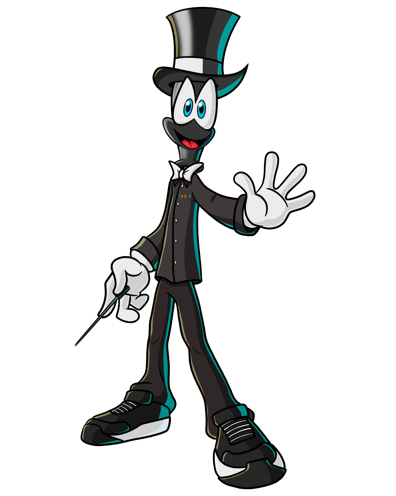
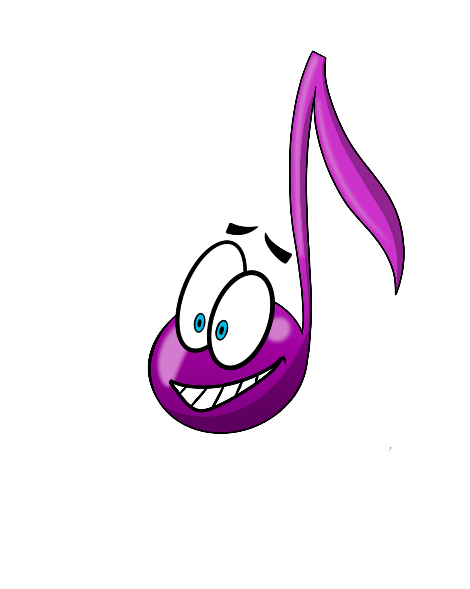
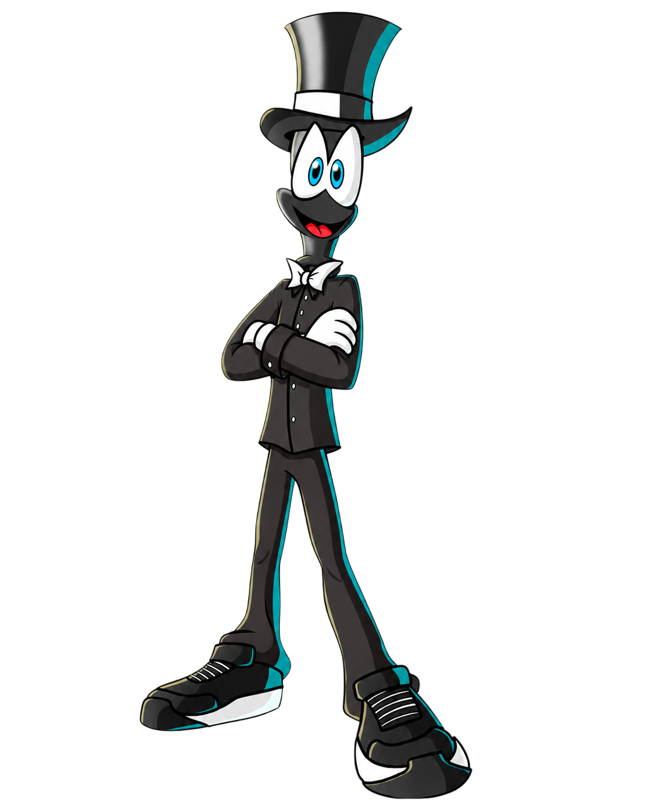
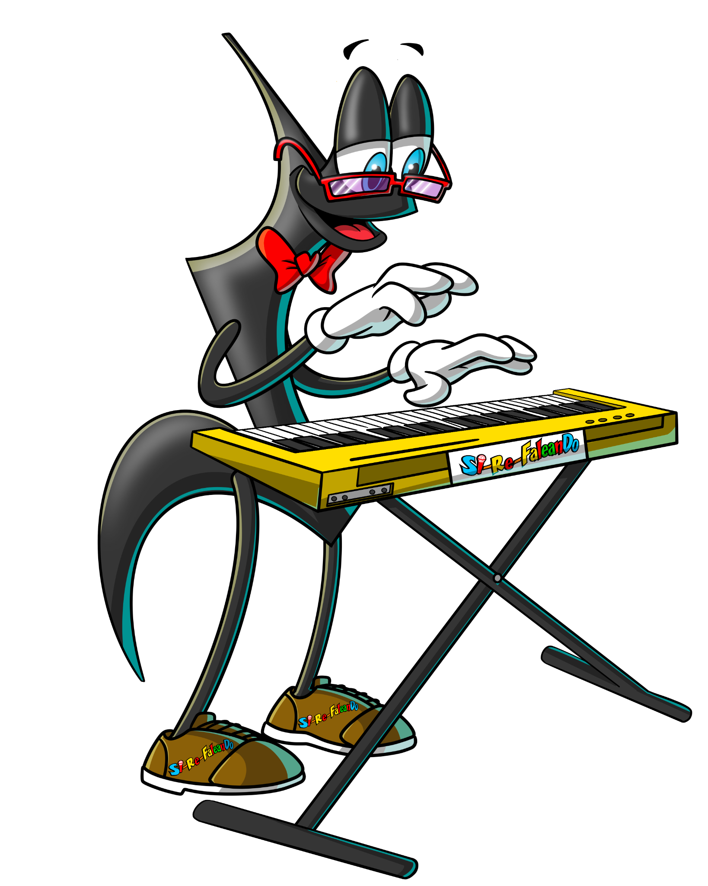
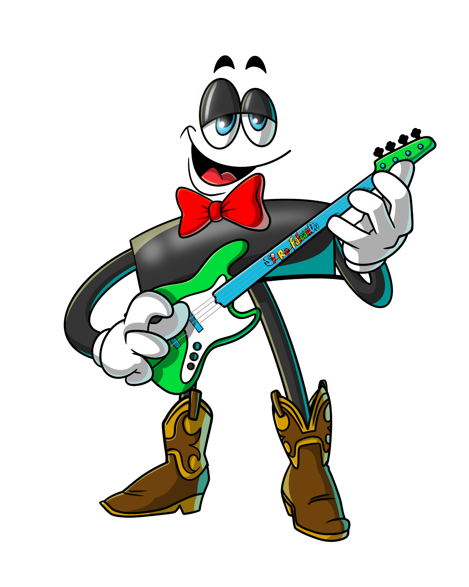
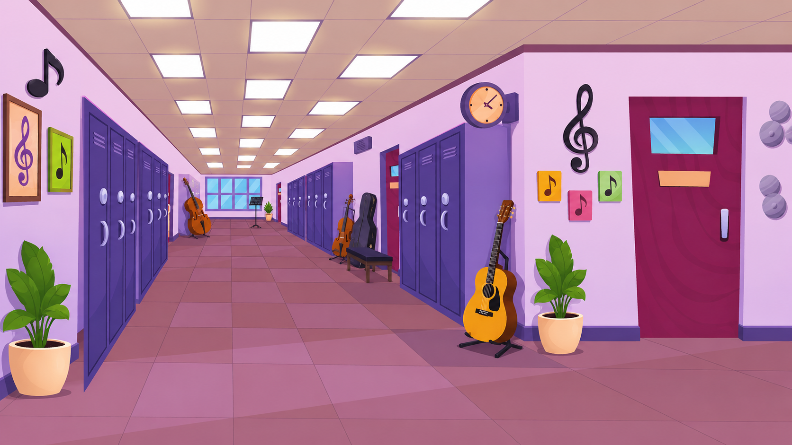
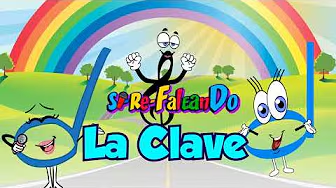
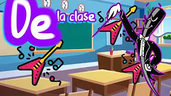

🎵
Notas musicales
Actividades para identificar Do, Re, Mi, Fa, Sol, La y Si con ejemplos simples y ejercicios visuales.
Música, cuentos y creatividad para niños
Si-Re-FaleanDo ayuda a los niños a aprender notas musicales, leer partituras, reconocer instrumentos y descubrir cómo tocarlos mediante clases, cuentos físicos y libros de colorear.




Para escuelas
La escuela recibe apoyo para que los niños aprendan música de forma práctica, visual y divertida. El programa combina enseñanza musical, lectura, actividades creativas y materiales físicos.


Qué ofrecemos
Actividades para identificar Do, Re, Mi, Fa, Sol, La y Si con ejemplos simples y ejercicios visuales.
Introducción al pentagrama, figuras musicales y lectura básica para niños de forma clara.
Reconocimiento de instrumentos, sonidos, uso básico y actividades para despertar interés musical.
Historias impresas que conectan la música con la imaginación y refuerzan el aprendizaje en clase.
Materiales para colorear personajes, notas e instrumentos mientras los niños repasan conceptos.
Soluciones diseñadas para facilitar la enseñanza musical sin complicar la operación escolar.



Aprendizaje visual
El diseño del programa usa personajes, colores, instrumentos, lápices, hojas de partituras y recursos tipo cartoon para mantener la atención de los estudiantes.

Personajes de la marca
Canal educativo
Visita el canal para reforzar notas musicales, partituras, instrumentos y actividades que los niños pueden practicar desde la escuela o la casa.
Ver canal de YouTube



Cotizaciones
Completa el formulario y se abrirá WhatsApp con tu solicitud lista para enviar.
+1 (787) 215-6908
sirefaleando@gmail.com
@sirefalenado